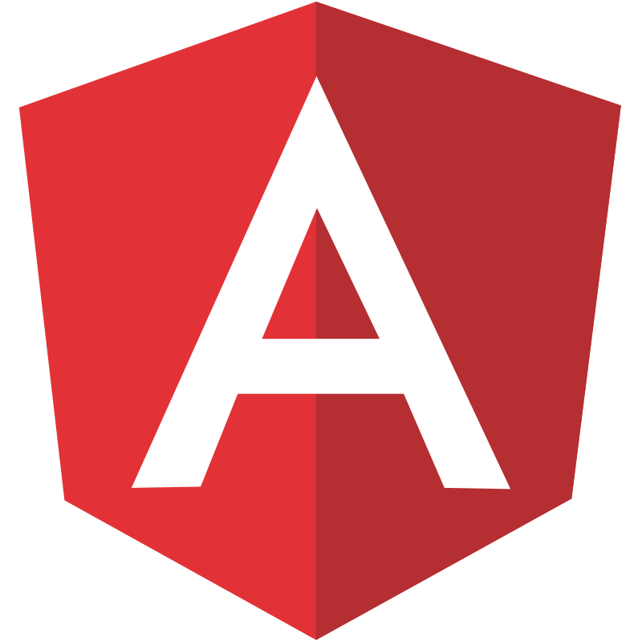
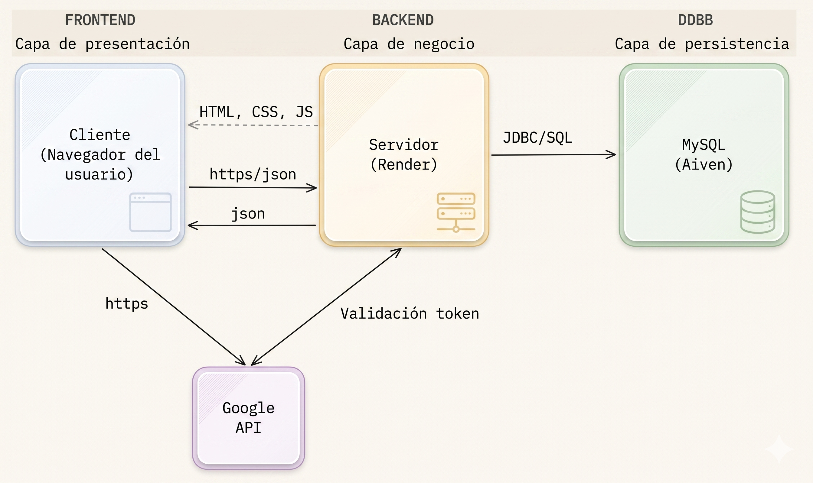

Plataforma de gestión financiera personal inteligente
Trabajo de Fin de Grado · 2025 – 2026
Autor: Juan Manuel Bustos Moya ·
Tutor: Óscar Soto Sánchez
Buenas tardes al tribunal. Soy Juan Manuel Bustos Moya y voy a presentar SmartSpend,
una plataforma web de gestión financiera personal desarrollada como TFG bajo la tutela
de Óscar Soto Sánchez.
00 · Índice
Contenido de la Presentación
01
Funcionalidades de SmartSpend
Escaparate del producto · 8 bloques clave
02
Objetivos del Proyecto
Funcionales · técnicos · arquitectura global
03
Arquitectura del Sistema
Angular · Spring Boot · Aiven · Render
04
Metodología y Despliegue Continuo
Estrategia de ramas · CI · Pruebas automáticas
05
Seguridad — Stateless JWT
Spring Security · JWT · Google OAuth 2.0
06
Lógica Transaccional y Deudas
effectiveAmount · excludeFromStats · Recurrentes
07
Motor Predictivo
Regresión lineal · SQL · Previsión 90 días
08
Demo
Video en YouTube + acceso directo a la app cloud
09
Conclusiones
Objetivos alcanzados · calidad · cierre del proyecto
10
Trabajos Futuros
App móvil · IA · Freemium
La presentación cubre diez bloques: funcionalidades, objetivos, arquitectura,
metodología, seguridad, lógica de negocio, motor predictivo, conclusiones y líneas futuras.
01 · Funcionalidades
Funcionalidades de SmartSpend
Escaparate visual de las capacidades principales de la plataforma.
01Acceso y Registro de Cuenta
02Gastos Compartidos
03Motor de Previsión
04Cuadro de Mando Analítico
05Automatización Recurrente
06Soporte Multicuenta
07Informes PDF
08Motor de Búsqueda Avanzado
02 · Objetivos
Objetivos del Proyecto
Objetivos funcionales y técnicos alineados con el diseño de la solución.
Funcionales
Gestión integral del ciclo de vida de los movimientos y cuentas.
Capacidad de generar gastos compartidos.
Trazabilidad real de deudas preservando la integridad del balance.
Automatización de movimientos recurrentes.
Proveer herramientas de análisis visual y proyección a futuro.
Técnicos
Arquitectura Cliente-Servidor SPA (Angular 21) + API RESTful (Spring Boot Java 21).
Seguridad robusta y Stateless (JWT + Google OAuth2).
Persistencia relacional en la nube (MySQL en Aiven).
Orquestación y portabilidad completa mediante contenedores (Docker).
Ciclo CI/CD automatizado con testing integral (GitHub Actions, JUnit, Newman).
03 · Arquitectura
Arquitectura del Sistema
Los 4 pilares de SmartSpend y su trabajo conjunto

⬡'" />
Angular 21
Frontend · SPA
Tailwind
Chart.js

Spring Boot
Backend · REST API
Security
JPA

services.png'" />
▲'" />
Render
Despliegue · CI/CD
Zero-downtime
☁'" />
Aiven
Base de Datos · Cloud
MySQL
Arquitectura cliente-servidor desacoplada. Angular 21 en el frontend como SPA.
Spring Boot en el backend con Spring Security, JPA y Flyway.
Render gestiona el despliegue continuo y Aiven provee MySQL cloud-managed.
04 · DevOps
Metodología y Despliegue Continuo
Del commit a producción en minutos, sin intervención manual
01
 Estrategia de Ramas
Estrategia de Ramas
- Rama main protegida
- Desarrollo en feature/ y fix/
- Merge solo vía Pull Request
02
 Pruebas y Validación
Pruebas y Validación
- Tests Unitarios e Integración
- API end-to-end con Newman
- PR bloqueado si falla algún test
03
 Generación de Imagen
Generación de Imagen
- Build Angular (frontend)
- Build Maven (backend)
- JRE 21 → DockerHub
04
Despliegue en Render
- Webhook automático DockerHub
- Render descarga :latest
- Zero-downtime garantizado
05 · Ingeniería I
Seguridad — Arquitectura Stateless
Sin sesiones en servidor · sin usuarios almacenados en claro
access_token (15 min)
refresh_token (7 días)
200 OK · recurso protegido
🖥️
Servidor
Spring Security
Filter Chain
JWT y Arquitectura Stateless
- Tokens firmados criptográficamente con HS256.
- Caducidad estricta de 15 minutos.
- Servidor stateless e inyección automática vía Interceptor HTTP.
Google OAuth 2.0
- Acceso sin fricción en un solo clic.
- Identidad delegada al proveedor (sin contraseñas locales).
- Máxima seguridad con una experiencia de usuario fluida.
Seguridad Perimetral
- Cadena de filtros estricta con
SecurityFilterChain.
- Contraseñas locales cifradas con
BCrypt.
- Peticiones sin Bearer token válido se rechazan al instante.
Arquitectura completamente stateless: el servidor nunca guarda sesiones.
JWT de 15 minutos más refresh token de 7 días con rotación.
Google OAuth gestiona la identidad sin que nosotros almacenemos contraseñas de Google.
Spring Security valida la firma antes de pasar al controller. BCrypt para contraseñas propias.
06 · Ingeniería II
Lógica Transaccional — El problema de los pagos en grupo
Preservando la integridad estadística frente a los reembolsos (Bizums)
Paso 1 · El Gasto Principal
🍽️ Cena con amigos
-100,00 €
effectiveAmount: -25.00
El sistema aísla el impacto real que le corresponde al usuario.
→
Paso 2 · Deuda y Reembolso
💸 3 amigos pagan su parte (Bizums)
+75,00 €
excludeFromStats: true
Generación de transacción de ajuste atómica.
→
Paso 3 · El Doble Resultado
🏦 Contabilidad Cuadrada
-100 + 75 = -25 € reales en cuenta.
📊 Analítica Pura
Los gráficos solo ven los 25 € del effectiveAmount, ignorando los Bizums.
Mostramos el problema de pagos compartidos y su solución de ingeniería.
effectiveAmount conserva el impacto real del usuario en su cuenta.
excludeFromStats evita contaminar analítica con reembolsos de Bizum.
07 · Ingeniería III
Motor Predictivo — Previsión Financiera
Regresión lineal sobre los últimos 90 días mediante consultas SQL optimizadas
El algoritmo toma el gasto acumulado en el mes y suma la estimación de lo que falta,
calculada como la media diaria de los últimos 90 días por los días restantes.
Todo con una consulta SQL GROUP BY category, sin librerías externas.
08 · Demo
Demo en Vivo del Producto
Visualización real de SmartSpend en YouTube y acceso directo a la instancia cloud.
Esta diapositiva concentra la demo práctica: vídeo completo en YouTube
y enlace directo a la aplicación desplegada en Render para su validación en vivo.
09 · Conclusiones
Conclusiones del Proyecto
Resumen de resultados funcionales, técnicos y de calidad alcanzados.
✅ Objetivos Alcanzados
Éxito Funcional
Cumplimiento del 100% de los requisitos. Implementación exitosa del motor predictivo y la trazabilidad de gastos compartidos.
Éxito Técnico
Migración a una arquitectura Full-stack distribuida y segura (Angular + Spring Boot + JWT), 100% dockerizada.
Calidad de Código
Flujo CI/CD consolidado alcanzando un 86,83% de cobertura de pruebas en el servidor (validadas mediante JaCoCo).
Esta diapositiva cierra el proyecto mostrando objetivos cumplidos,
solidez técnica de la arquitectura y calidad alcanzada mediante pruebas.
10 · Futuros
Visión de Futuro
Líneas estratégicas de evolución para ampliar alcance e impacto.
🚀 Siguientes Pasos
App Móvil Nativa
Expansión a plataformas iOS y Android.
Notificaciones Inteligentes
Alertas push para avisar de desviaciones de gasto y eventos relevantes en tiempo real.
Presupuestos por Categoría
Definición de límites mensuales por categoría con seguimiento visual de cumplimiento.
Modelo de IA para Ahorro
Motor de recomendaciones personalizadas para optimizar hábitos financieros y de ahorro.
Modelo Freemium
Integración de pasarela de pago para rentabilizar la plataforma desbloqueando analíticas avanzadas.
Hoja de ruta de evolución: aplicación móvil nativa, capacidades de IA y monetización
con un modelo freemium para sostener el crecimiento del producto.
 ▶ Ver demo completo
▶ Ver demo completo